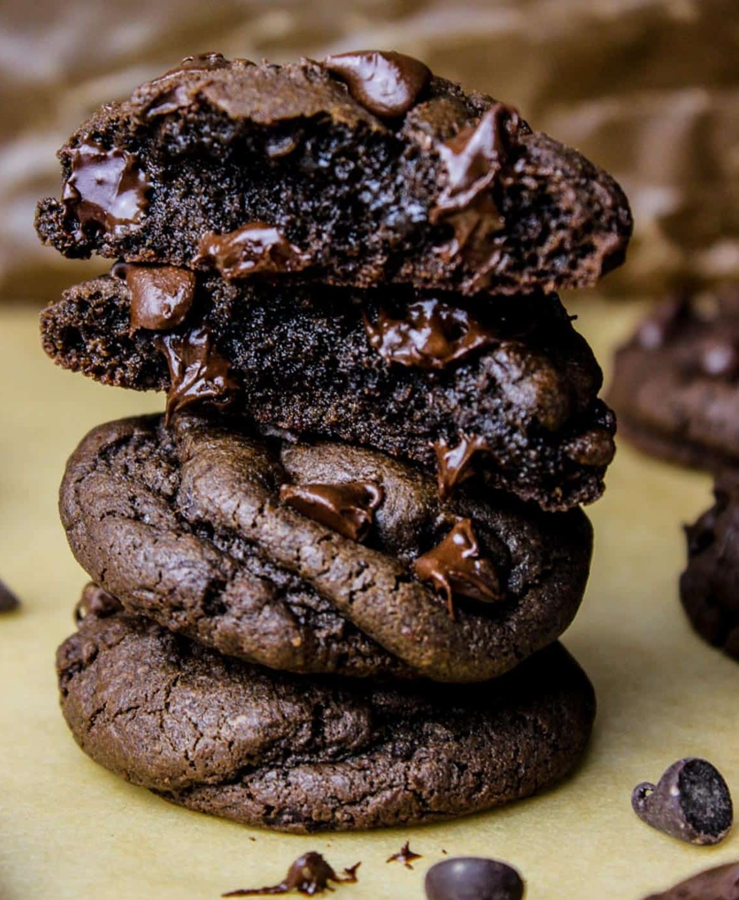

Double Chocolate Chip Cookies

Chewy and Decadent Cookies
You will fall in love with this Thick and Chewy Double Chocolate Chip Cookies Recipe that bakes supremely soft and fudgy in the centers, oh so chewy on the edges.
Ingredients:
- ½ Cup Butter (unsalted, softened to room temperature)
- 2 oz Cream Cheese (Brick style, softened to room temperature)
- ½ Cup Light Brown Sugar (Packed)
- ¼ Cup Granulated Sugar
- 1 large Egg (at room temperature)
- 1 tsp Instant Espresso
- 2 teaspoon Pure Vanilla Extract
- 1 ¾ Cups All Purpose Flour (measured correctly)
- 2 teaspoon Cornstarch
- ½ Cup Unsweetened Cocoa
- teaspoon Baking Soda
- ¼ teaspoon Salt
- 12 oz Milk Chocolate Chips
Steps:
- In the bowl of a stand mixer, or using a hand beater beat butter and both sugars, till light and fluffy. This should take about 1-2 minutes
- Now add softened cream cheese and continue to beat till the mixture appears pale and fluffy. About 2 minutes. Next add in egg and beat again. Add vanilla and espresso powder and give it a quick whirl too.
- Now sift all the dry ingredients (Flour, cornstarch, cocoa, baking soda and salt) over wet. And slowly mix them all in to form dough. Add in chocolate chips. Chill the dough in refrigerator for a minimum of 30 minutes or up to 3-4 hours in the fridge.
- When ready to bake, preheat oven to 350 deg F and line 2 baking sheets with silicon mat or parchment paper. Drop about 2 Tbsps mounds of cookie dough on sheets and place them around 2 inches apart.
- Bake for 10-11 minutes. When done, the cookies will appear just set on corners and puffy in the middle. Allow to cool for 4-5 minutes on baking tray and then transfer to wire rack to complete cooling.